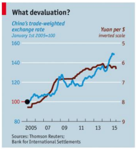

The Devaluation of the Yuan: Two Motives
— 2015-12-07
When you think war, you think of conflict, strategy, and politics. “Currency Wars,” although absent of any physical intermingling, encapsulates many of these same ideas. The goal is clear: devalue your currency so that your country has an exports pricing advantage over competitors. However, every other country in response will devalue their currency to stay competitive. Hence, a vicious circle of devaluation occurs. We typically do not see this during times of economic prosperity. If everyone is well off, there is no incentive to risk a race to the bottom. Presently, however, the second largest economy in the world isn't doing so hot. China’s exports have tumbled 8.3% in July, and the country’s 10% projected growth rate seems to be slipping.
So What Does China Do?
On August 11th, China devalued the renminbi, or Chinese yuan, by 1.9% versus the dollar, and the following day, on August 12th, devalued it by an additional 1.6%. For those not familiar with the different exchange-rate regimes, this may be confusing. Countries with a floating exchange rate—such as Canada, the US, and most open market economies—typically do not meddle directly with the value of their currency. Instead, they allow the value of their currency to fluctuate in response to the supply and demand in the foreign-exchange market.
China, however, enforces a fixed rate currency model that allows for market intervention. When China feels their economy is sluggish and needs a boost, they may devalue their currency to enhance exports. Although this is an easy conclusion to come to, pundits are skeptical as to whether this is the real reason behind the central bank’s devaluation of the Yuan. There is a second, arguably more legitimate, motive for the devaluation.
Reserve Currency Status
China has been upfront about their pursuit of a reserve-currency status for the yuan for some time now. This would explain the steady devaluation of the yuan and the movement towards a more market-oriented economy. However, the International Monetary Fund (IMF) has yet to deem the yuan suitable. The IMF has the ultimate say as to what currencies are included in the reserve basket. A key guideline is that the exchange rate must be “freely floating,” that is to say, absolved of any direct influence; this has not been the case for China.
Adhering to a fixed currency model, China’s central bank sets a midpoint, or “central parity,” and maintains it within a 2% band above or below that value. Although the yuan would regularly lean towards the weaker end of the 2% band, the central bank would simply nudge the value back up to its midpoint.
Recently, however, China has been loosening its grip on its currency. On August 11th, the central bank declared that the midpoint set each day would simply be the previous day’s closing value. The result was the observed 3.7% corrective plunge of the yuan’s value. Although this devaluation does not immediately qualify the yuan as a reserve currency, many regard it as a step in the right direction. It is unrealistic to expect the central bank to switch the yuan from a fixed exchange rate to a floating exchange rate overnight, and so we can only expect a slow and steady shift towards a more market-based currency.
As logical as this justification sounds, some are still skeptical of China’s intentions. The new exchange-rate policy is best regarded as a “managed float,” meaning there still exists occasional fixing of the currency. Furthermore, China has experimented with interest rate cuts and fiscal policy change in the past without much avail.
This devaluation may seem like another attempt at stimulating their slowing economy, potentially at the cost of provoking a currency war.
So far we have examined two sides of the story. Either China is directly intervening to fight a currency war or they are merely attempting to liberalize the yuan and enter the reserve basket. Which is it? Although a currency war is a compelling story, the scale of which the yuan has been weakened belies such a motive. In comparison to last year, the yuan has remained 10% stronger against the currencies of China’s trading partners. A much larger depreciation of the yuan would be needed to incite a noticeable growth in exports. Therefore, it seems most likely that China’s devaluation of the yuan and loosening of policy is motivated by the desire to achieve reserve currency status. Later this year, the IMF will decide whether or not these efforts were in vain. Meanwhile, we should expect China to be less restrictive with the yuan and potentially devalue further against the US dollar.